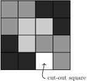

For all \(n\in\mathbb{N}\text{,}\)\(\displaystyle 1+2+3+\cdots +n=\frac{n(n+1)}{2}\text{.}\)
For all \(n\in\mathbb{N}\text{,}\)\(n^{2}+n+41\) is prime.
Let’s take a look at potential proofs.
“Proof” of (a). If \(n=1\text{,}\) then \(1=\frac{1(1+1)}{2}\text{.}\) If \(n=2\text{,}\) then \(1+2=3=\frac{2(2+1)}{2}\text{.}\) If \(n=3\text{,}\) then \(1+2+3=6=\frac{3(3+1)}{2}\text{,}\) and so on.
“Proof” of (b). If \(n=1\text{,}\) then \(n^{2}+n+41=43\text{,}\) which is prime. If \(n=2\text{,}\) then \(n^{2}+n+41=47\text{,}\) which is prime. If \(n=3\text{,}\) then \(n^{2}+n+41=53\text{,}\) which is prime, and so on.
Are these actual proofs? No! In fact, the second claim is not even true. If \(n=41\text{,}\) then \(n^{2}+n+41=41^{2}+41+41=41(41+1+1)\text{,}\) which is not prime since it has 41 as a factor. It turns out that the first claim is true, but what we wrote cannot be a proof since the same type of reasoning when applied to the second claim seems to prove something that isn not actually true. We need a rigorous way of capturing “and so on” and a way to verify whether it really is “and so on.”
Recall that an axiom is a basic mathematical assumption. The following axiom is one of the Peano Axioms, which is a collection of axioms for the natural numbers introduced in the 19th century by Italian mathematician Giuseppe Peano 1 (1858–1932).
Axiom4.1.Axiom of Induction.
Let \(S\subseteq \mathbb{N}\) such that both
\(1\in S\text{,}\) and
if \(k\in S\text{,}\) then \(k+1\in S\text{.}\)
Then \(S=\mathbb{N}\text{.}\)
We can think of the set \(S\) as a ladder, where the first hypothesis as saying that we have a first rung of a ladder. The second hypothesis says that if we are on any arbitrary rung of the ladder, then we can always get to the next rung. Taken together, this says that we can get from the first rung to the second, from the second to the third, and in general, from any \(k\)th rung to the \((k+1)\)st rung, so that our ladder is actually \(\mathbb{N}\text{.}\) Do you agree that the Axiom of Induction is a pretty reasonable assumption?
At the end of Section 3.2, we briefly discussed ZFC, which is the standard choice for axiomatic set theory. It turns out that one can prove the Axiom of Induction as a theorem in ZFC. However, that will not be the approach we take. Instead, we are assuming the Axiom of Induction is true. Using this axiom, we can prove the following theorem, known as the Principle of Mathematical Induction. One approach to proving this theorem is to let \(S=\{k\in \mathbb{N}\mid P(k) \text{ is true } \}\) and use the Axiom of Induction. The set \(S\) is sometimes called the truth set. Your job is to show that the truth set is all of \(\mathbb{N}\text{.}\)
Theorem4.2.Principle of Mathematical Induction.
Let \(P(1), P(2), P(3), \ldots\) be a sequence of statements, one for each natural number. Assume
\(P(1)\) is true, and
for all \(k\geq 1\text{,}\) if \(P(k)\) is true, then \(P(k+1)\) is true.
Then \(P(n)\) is true for all \(n\in\mathbb{N}\text{.}\)
The Principle of Mathematical Induction provides us with a process for proving statements of the form: “For all \(n\in\mathbb{N}\text{,}\)\(P(n)\text{,}\)” where \(P(n)\) is some predicate involving \(n\text{.}\) Hypothesis (i) above is called the base step (or base case) while (ii) is called the inductive step.
You should not confuse mathematical induction with inductive reasoning associated with the natural sciences. Inductive reasoning is a scientific method whereby one induces general principles from observations. On the other hand, mathematical induction is a deductive form of reasoning used to establish the validity of a proposition.
Skeleton Proof.
[Proof of \((\forall n\in\mathbb{N})P(n)\) by Induction] Here is the general structure for a proof by induction.
Proof.
We proceed by induction.
(i).
Base step: [Verify that \(P(1)\) is true. This often, but not always, amounts to plugging \(n=1\) into two sides of some claimed equation and verifying that both sides are actually equal.]
(ii).
Inductive step: [Your goal is to prove “For all \(k\in\mathbb{N}\text{,}\) if \(P(k)\) is true, then \(P(k+1)\) is true.” ] Let \(k\in\mathbb{N}\) and assume that \(P(k)\) is true. [Do something to derive that \(P(k+1)\) is true.] Therefore, \(P(k+1)\) is true.
Thus, by induction, \(P(n)\) is true for all \(n\in\mathbb{N}\text{.}\)
Prove the next few theorems using induction. The first result may look familiar from calculus. Recall that \(\displaystyle \sum_{i=1}^{n}i=1+2+3+\cdots +n\text{,}\) by definition.
Theorem4.3.
For all \(n\in\mathbb{N}\text{,}\)\(\displaystyle \sum_{i=1}^{n}i=\frac{n(n+1)}{2}\text{.}\)
Theorem4.4.
For all \(n\in\mathbb{N}\text{,}\) 3 divides \(4^{n}-1\text{.}\)
Theorem4.5.
For all \(n\in\mathbb{N}\text{,}\) 6 divides \(n^{3}-n\text{.}\)
Theorem4.6.
Let \(p_{1}, p_{2}, \ldots,
p_{n}\) be \(n\) distinct points arranged on a circle. Then the number of line segments joining all pairs of points is \(\frac{n^{2}-n}{2}\text{.}\)
Problem4.7.
Consider a grid of squares that is \(2^n\) squares wide by \(2^n\) squares long, where \(n\in\mathbb{N}\text{.}\) One of the squares has been cut out, but you do not know which one! You have a bunch of L-shapes made up of \(3\) squares. Prove that you can perfectly cover this chessboard with the L-shapes (with no overlap) for any \(n\in\mathbb{N}\text{.}\)Figure 4.8 depicts one possible covering for the case involving \(n=2\text{.}\)

Figure4.8.One possible covering for the case involving \(n=2\) for Problem 4.7.
\epigraph{Do not stop thinking of life as an adventure. You have no security unless you can live bravely, excitingly, imaginatively; unless you can choose a challenge instead of competence.}{Eleanor Roosevelt, political figure & activist}